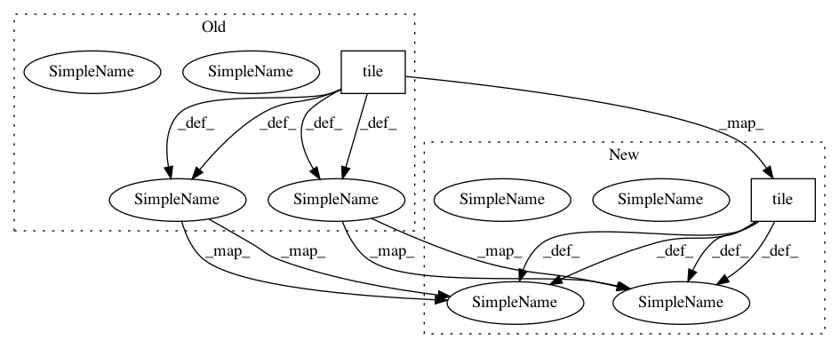

97a8df33c3dd671cd09d8499dcc5d55ecad6b666,softlearning/algorithms/sql.py,SQL,_create_svgd_update,#SQL#,257
Before Change
[None, n_updated_actions, *self._action_shape])
Q_log_targets = tuple(
Q([tf.tile(self._observations_ph, (n_fixed_actions, 1)),
tf.reshape(fixed_actions, (-1, *self._action_shape))])
for Q in self._Qs)
min_Q_log_target = tf.reduce_min(Q_log_targets, axis=0)
svgd_target_values = tf.reshape(
min_Q_log_target,
(-1, n_fixed_actions, 1))
// Target log-density. Q_soft in Equation 13:
assert self._policy._squash
squash_correction = tf.reduce_sum(
tf.log(1 - fixed_actions ** 2 + EPS), axis=-1, keepdims=True)
log_probs = svgd_target_values + squash_correction
grad_log_probs = tf.gradients(log_probs, fixed_actions)[0]
grad_log_probs = tf.expand_dims(grad_log_probs, axis=2)
grad_log_probs = tf.stop_gradient(grad_log_probs)
assert_shape(grad_log_probs,
[None, n_fixed_actions, 1, *self._action_shape])
kernel_dict = self._kernel_fn(xs=fixed_actions, ys=updated_actions)
// Kernel function in Equation 13:
kappa = kernel_dict["output"][..., tf.newaxis]
assert_shape(kappa, [None, n_fixed_actions, n_updated_actions, 1])
// Stein Variational Gradient in Equation 13:
action_gradients = tf.reduce_mean(
kappa * grad_log_probs + kernel_dict["gradient"], axis=1)
assert_shape(action_gradients,
[None, n_updated_actions, *self._action_shape])
// Propagate the gradient through the policy network (Equation 14).
gradients = tf.gradients(
updated_actions,
self._policy.trainable_variables,
grad_ys=action_gradients)
surrogate_loss = tf.reduce_sum([
tf.reduce_sum(w * tf.stop_gradient(g))
for w, g in zip(self._policy.trainable_variables, gradients)
])
After Change
Q_log_targets = tuple(
Q([
tf.reshape(
tf.tile(
self._observations_ph[:, None, :],
(1, n_fixed_actions, 1)),
(-1, *self._observation_shape)),
tf.reshape(fixed_actions, (-1, *self._action_shape))
])
for Q in self._Qs)
min_Q_log_target = tf.reduce_min(Q_log_targets, axis=0)
svgd_target_values = tf.reshape(
min_Q_log_target,
(-1, n_fixed_actions, 1))
// Target log-density. Q_soft in Equation 13:
assert self._policy._squash
squash_correction = tf.reduce_sum(
tf.log(1 - fixed_actions ** 2 + EPS), axis=-1, keepdims=True)
log_probs = svgd_target_values + squash_correction
grad_log_probs = tf.gradients(log_probs, fixed_actions)[0]
grad_log_probs = tf.expand_dims(grad_log_probs, axis=2)
grad_log_probs = tf.stop_gradient(grad_log_probs)
assert_shape(grad_log_probs,
[None, n_fixed_actions, 1, *self._action_shape])
kernel_dict = self._kernel_fn(xs=fixed_actions, ys=updated_actions)
// Kernel function in Equation 13:
kappa = kernel_dict["output"][..., tf.newaxis]
assert_shape(kappa, [None, n_fixed_actions, n_updated_actions, 1])
// Stein Variational Gradient in Equation 13:
action_gradients = tf.reduce_mean(
kappa * grad_log_probs + kernel_dict["gradient"], axis=1)
assert_shape(action_gradients,
[None, n_updated_actions, *self._action_shape])
// Propagate the gradient through the policy network (Equation 14).
gradients = tf.gradients(
updated_actions,
self._policy.trainable_variables,
grad_ys=action_gradients)
surrogate_loss = tf.reduce_sum([
tf.reduce_sum(w * tf.stop_gradient(g))
for w, g in zip(self._policy.trainable_variables, gradients)
])
In pattern: SUPERPATTERN
Frequency: 4
Non-data size: 2
Instances
Project Name: rail-berkeley/softlearning
Commit Name: 97a8df33c3dd671cd09d8499dcc5d55ecad6b666
Time: 2019-02-01
Author: hartikainen@berkeley.edu
File Name: softlearning/algorithms/sql.py
Class Name: SQL
Method Name: _create_svgd_update
Project Name: rail-berkeley/softlearning
Commit Name: df5db9f008e979fd1c54c31654f2c4757c747d4c
Time: 2019-02-01
Author: hartikainen@berkeley.edu
File Name: softlearning/algorithms/sql.py
Class Name: SQL
Method Name: _create_svgd_update
Project Name: keras-team/keras
Commit Name: 48c1c96ac4cfec5580a5feb7eb7ef7c25c6db234
Time: 2018-10-29
Author: gabrieldemarmiesse@gmail.com
File Name: keras/backend/tensorflow_backend.py
Class Name:
Method Name: ctc_label_dense_to_sparse